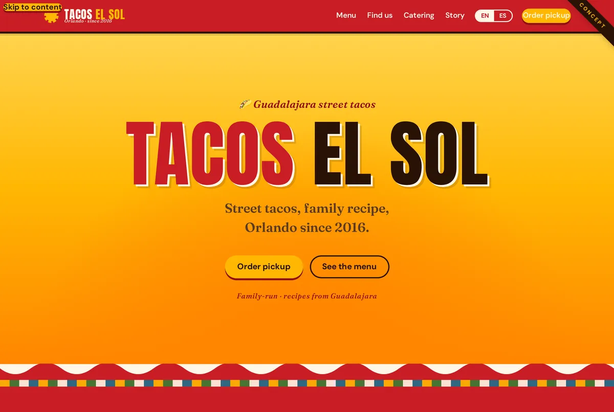
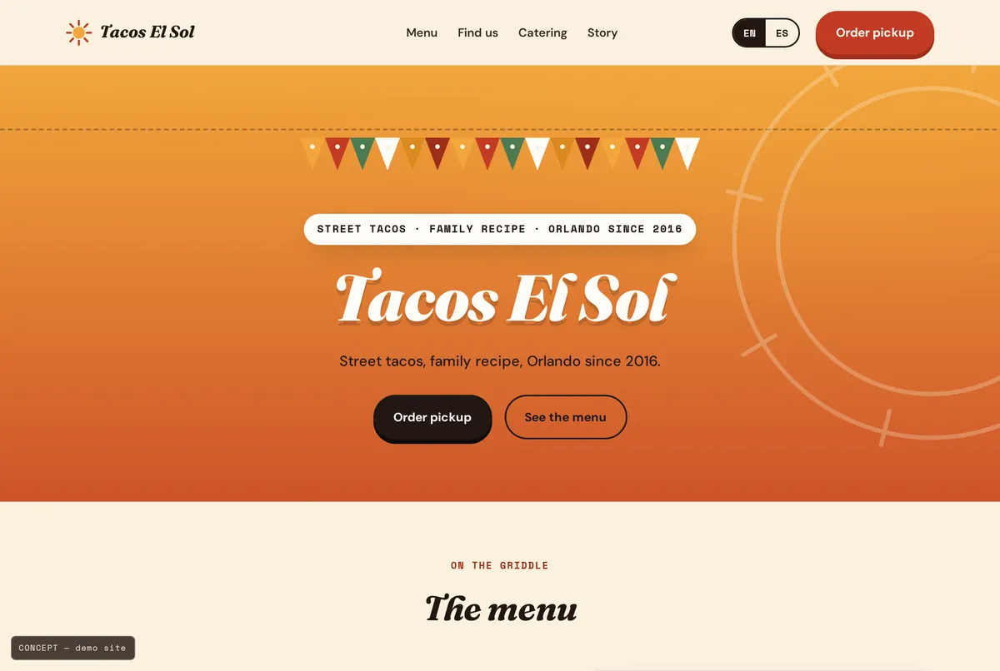
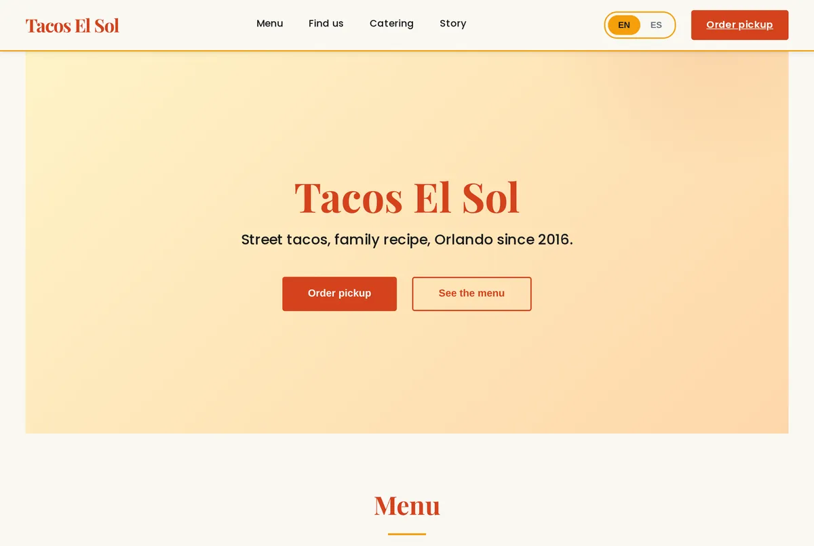
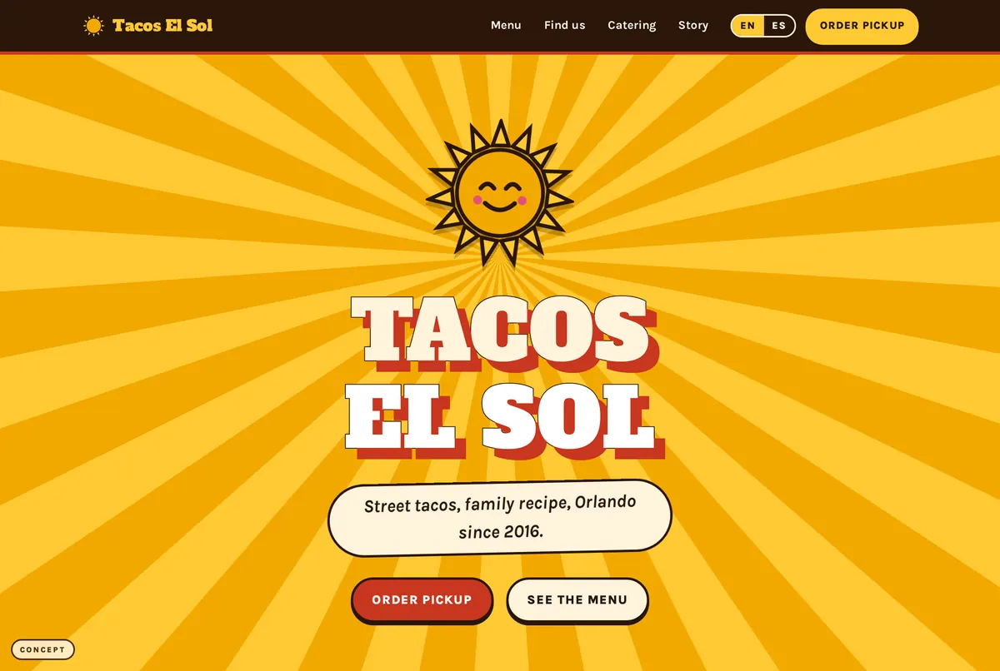
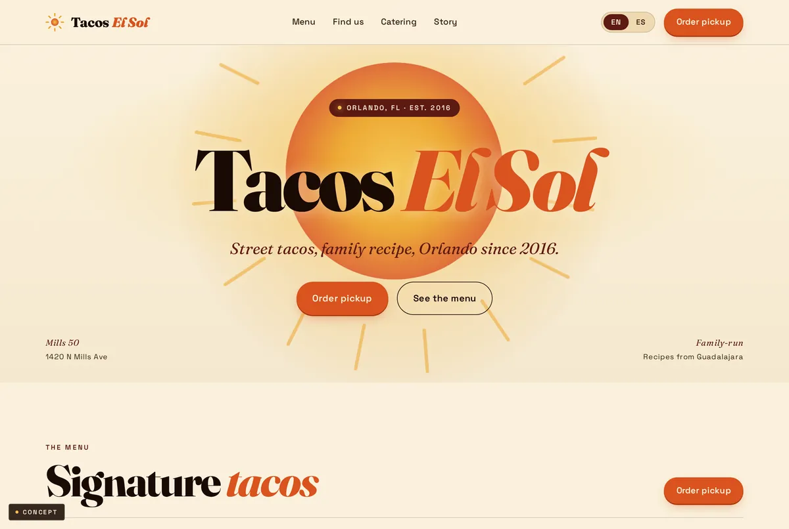
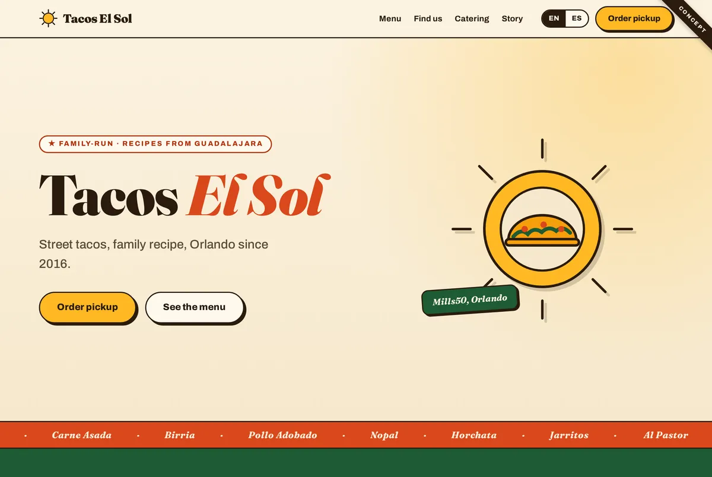
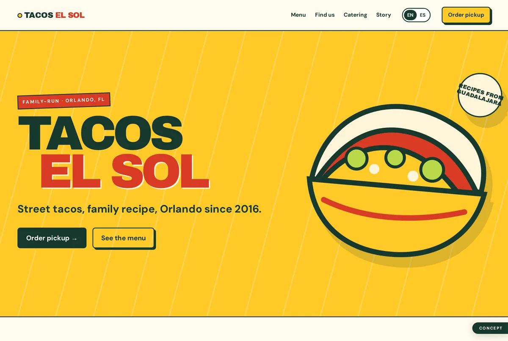

[ Showcase · one brief · seven models · what changes is taste, not the ask ]
One fictional client — Tacos El Sol, a bilingual family taquería in Orlando — handed identical copy, menu, prices, hours and a working EN/ES toggle. The only variable is which model built it. Same words in, seven different sites out.
The shared brief → a self-contained one-page site: sticky nav · striking hero · signature-taco menu with prices · fixed stand + weekly truck schedule · catering pitch · Reyes-family story + review · footer. Hard rules: no external images (CSS/SVG/emoji only), a real vanilla-JS English/Spanish toggle, responsive + accessible. Nobody was told how it should look.
★ The Claude family — Opus · Sonnet · Haiku · Fable

Warm, saturated, balanced.
Chile-red + marigold over masa cream, salsa-verde catering band, Talavera-blue accents. Anton sign-painter caps against Fraunces italics + DM Sans. A radiant sun-rays hero with a scalloped torn-paper edge, hard-offset "sticker" cards, and a hand-tilted price tag.
Open Opus →
Editorial, light, refined.
A papel-picado paper-banner motif recurs as the signature element, with a sun-ray mark, hand-torn menu dividers and perforated ticket-stub schedule cards. Tortilla cream, marigold, chile red and cactus green in Fraunces italic display + DM Sans + Space Mono numerals — a hand-lettered menu-board feel, not a template.
Open Sonnet →
Clean, calm, quick.
Warm clay terracotta, golden sunshine and forest-green accents in a modern grid. Playfair Display serif headings against friendly Poppins body, soft card-based sections with generous breathing room and gentle gradient moments in the hero and story. The most restrained, conventional-trust take of the four.
Open Haiku →
Loud, hand-painted, fiesta.
Mexican rotulista mercado-sign vernacular: saturated sun-yellow ground with chile red, nopal green, masa cream and jamaica pink. Alfa Slab One caps with painted offset shadows over Karla body. A smiling SVG sun over conic-gradient rays, a papel-picado banner divider, and chunky starburst price tags on ticket-style cards.
Open Fable →★ Other frontier models — same brief, run locally (GLM · Kimi · GPT)

Editorial, sun-disc, confident.
A big radiant sun-disc glows behind the wordmark set in a warm italic serif; cream, burnt-orange and deep maroon. A numbered menu with SIGNATURE / VEG chips, a CSS-drawn map pin for the stand, and a ticket-stub weekly route. The most magazine-like of the set.
Open GLM →
Warm, ticker, hand-lettered.
Cream, pine-green and chile-red with a sun-cradling-a-taco SVG mark and a scrolling menu ticker. Serif display (italic red "El Sol"), white menu cards on a green band, a "one stand, one truck" find-us split, and a bilingual "Hecho con orgullo en Orlando" footer.
Open Kimi →
Flat, modern, brand-system.
The most finished flat-brand take: a yellow hero with a bold inline-SVG taco and a "Recipes from Guadalajara" seal, forest-green display type against red accents, a two-column menu, a red find-us band, and a green sun badge in the story. Reads like a real brand kit.
Open GPT →